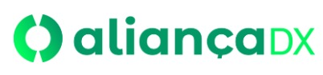

Receber acesso · Host
Exibe o código e a senha. A pessoa neste PC confere e aprova quem pode ver a tela, controlar e trocar arquivos.
Como receber acessoNo ZIP: dist/AliancaDX_Host_Setup.exe
Acesse pelo computador ou pelo Android. Compartilhe o convite, confira quem está conectando e autorize cada sessão no PC.
Windows 10/11 de 64 bits. Os componentes necessários acompanham os instaladores.
Exibe o código e a senha. A pessoa neste PC confere e aprova quem pode ver a tela, controlar e trocar arquivos.
Como receber acessoNo ZIP: dist/AliancaDX_Host_Setup.exeCole o convite, informe a senha e solicite acesso. Depois da aprovação, a tela remota fica disponível neste computador.
Como acessar um PCNo ZIP: dist/AliancaDX_Controlador_Setup.exeInstale AliancaDX_Acesso_Remoto_6.2.1.apk, fornecido com esta entrega. Requer Android 8 ou superior, de 64 bits. O celular controla o PC com o mesmo convite do Host.
Mantenha o Host e o Controlador abertos durante a sessão.
Aguarde a conexão ficar pronta. Clique em Copiar convite e envie somente para a pessoa autorizada.
No Windows, abra Conectar → Colar → Validar código e continuar e digite a senha no campo próprio. No Android, use Colar convite → Conectar ao PC; um convite completo pode preencher a senha.
Confira o nome de quem pede o acesso e confirme a solicitação. A tela aparece no Controlador depois da autorização.
Ações diretas para trabalhar com a tela remota.
Use Tela cheia, escolha o monitor e ajuste a imagem em Controles. No Windows, F8 oculta ou mostra os comandos; Esc sai da tela cheia. O indicador da sessão mostra o tráfego recebido e enviado em Mbps.
Abra Arquivos, selecione o que deseja enviar ou solicitar e aguarde a confirmação do destinatário.
Quem está no Host pode pausar, retomar ou desconectar. Encerrar no Controlador termina a sessão atual.
Confira o convite, a senha e a aprovação antes de tentar novamente.
Copie um novo convite no Host correto, sem cortar o código. Confira a senha atual com Mostrar senha. No Windows, a senha precisa ser digitada separadamente; no Android, um convite completo pode preenchê-la.
Confira o pedido na janela do Host. A pessoa no PC precisa autorizar. Mantenha os programas abertos e a internet disponível. Em redes diferentes, a disponibilidade dos retransmissores e as regras de cada rede podem afetar a conexão.
No Host, abra Mesmo Wi-Fi ou cabo? Ver IP. No Controlador, use a conexão por IP/rede local, com o mesmo endereço, porta e senha. Porta padrão: 64321. A aprovação continua necessária.
Feche os aplicativos e instale a nova versão sobre a instalação existente. Não desinstale o Android antes. Identificadores, pastas de dados e assinatura foram mantidos para continuidade. Atualize os dois lados; as versões AliançaDX aceitam convites antigos. Para um Controlador antigo, envie somente o código MDA6 e a senha separadamente.
A atualização e os dados em aparelho Android real e Windows real ainda precisam de validação. Os testes e limites desta entrega estão em VALIDACAO.txt e nos relatórios do projeto Android.
O APK tem assinatura Android válida; não houve publicação ou análise do Play Protect nesta entrega. Os instaladores Windows não têm assinatura Authenticode. A identidade visual não garante ausência de avisos. Consulte a identificação e distribuição no Windows.